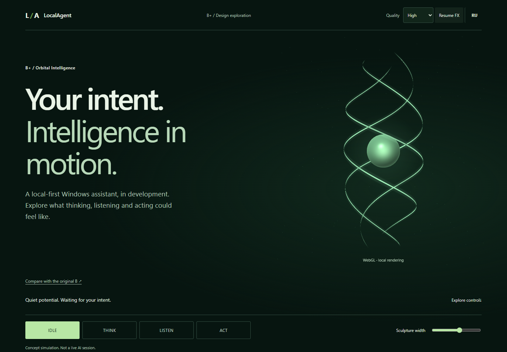
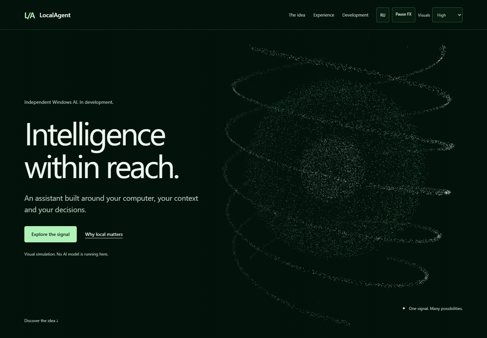
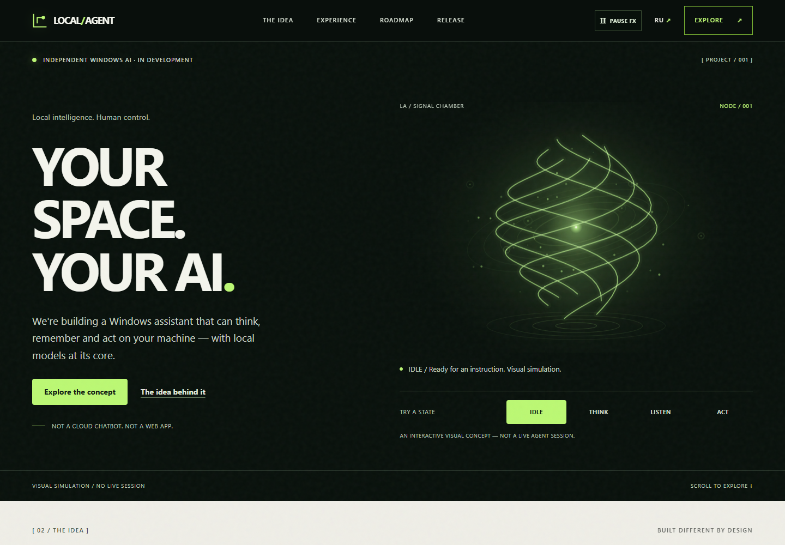
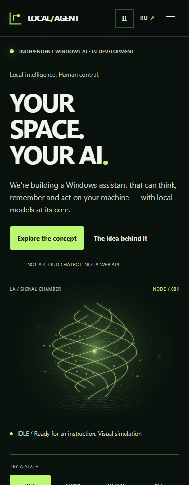
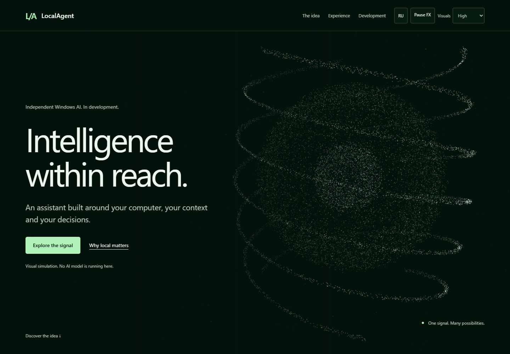
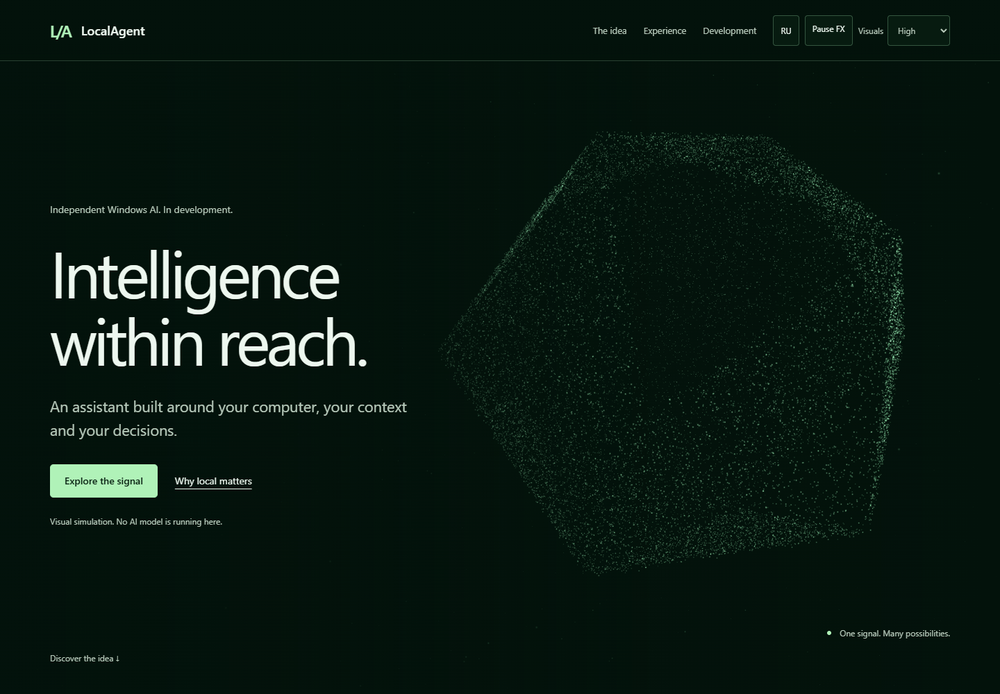
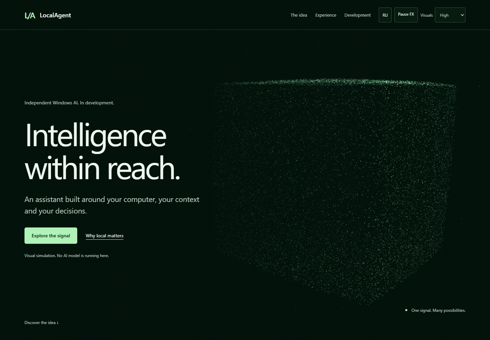
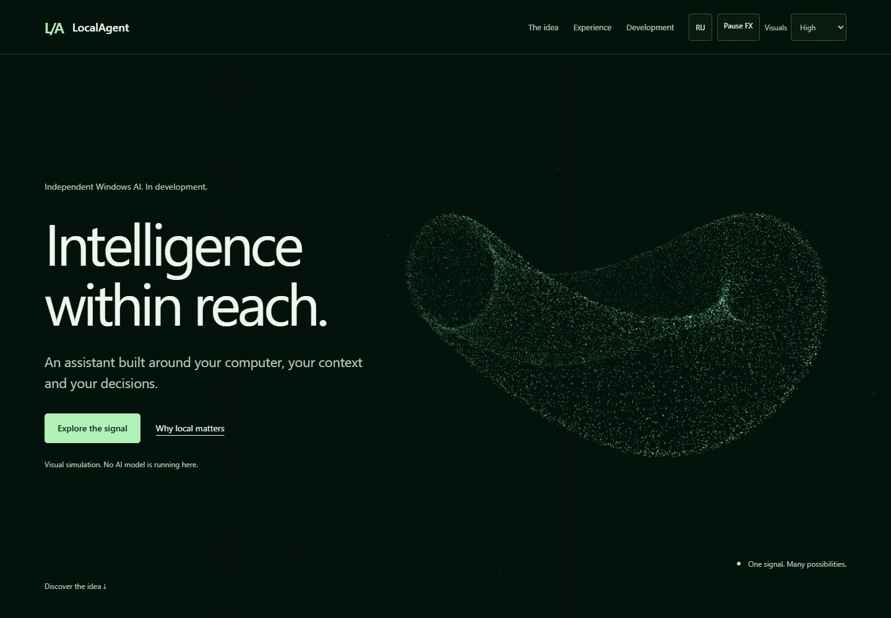

LocalAgent V3 — particle geometry morph
Latest PR22 correction: luminous core and continuous 3D ribbons — before/after + motion. Evidence below is the earlier 606ff36 snapshot.
Открыть работающую сцену · V2 для сравнения
Одна популяция частиц. Поле → сфера с пространственными спиралями → многогранник → граница куба → волновой тор → поле. Mode удерживает форму до «Снова следовать странице». Pause / reduced motion фиксируют позу, не накапливая переходы.
Предыдущие исследования и новый B
 B: исходное зелёное пространственное поле.
B: исходное зелёное пространственное поле.
B+: тонкая вертикальная mesh-спираль; сохранена в PR19.
B morph: постоянные точечные структуры + орбитальные ленты. Native WebGL2; один renderer.До / после V2



Настоящее движение
Canvas captureStream(60) — high, реальная отрисовка desktop и mobile viewport; аппаратный телефон не тестировался. Полный walkthrough с интерфейсом записан Playwright при 25 fps. MP4 без интерполяции кадров; фактическая средняя частота около 58.9 desktop / 58.4 mobile fps.
Разные формы одного сигнала




Raw local QA / GPU samples. Hosted CI NOT RUN. 60 layout cases; High/Balanced/Lite, RU/EN, rapid switching, reversed scroll, Pause/reduced freeze without catch-up, recovery, no-WebGL/no-JS, allocation failure, disposal. Hidden policy tested by simulated visibility event. Physical phones, Safari/Firefox, screen reader and sustained thermal runs: NOT RUN. No merge or deployment.